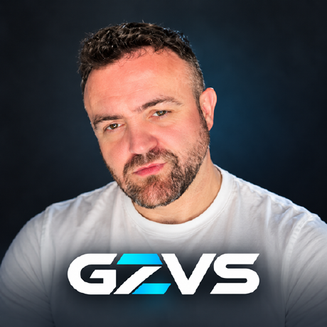

TinyShield
Browser extension
A lightweight, open-source browser extension for common ads and trackers, with optional adult and gambling website blocking.
Hi, I’m Georgios Zacharidis. I build with Dynamics 365 F&O, the Microsoft stack, and a curiosity for AI.

Browser extension
A lightweight, open-source browser extension for common ads and trackers, with optional adult and gambling website blocking.
Small tools, built to make everyday browsing a little easier.
At work, I’m a Dynamics 365 F&O developer. My day-to-day spans X++, C#, SQL, Azure integrations, Synapse, and Power Platform.
Outside that, I build useful apps and browser extensions, and explore Azure AI services and AI agents.